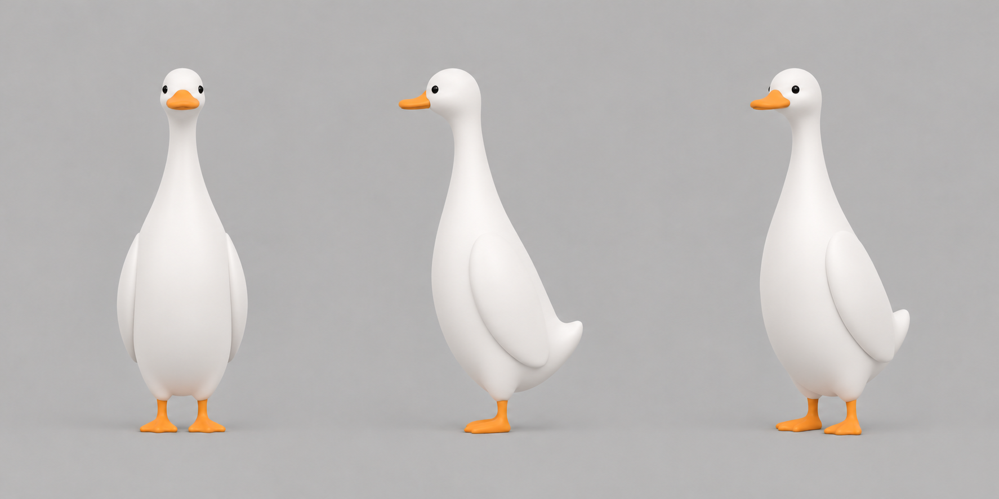

造型修订 / 内置生图 / 新增概念图，尚非真实模型物件为主体，鸭子缩成小巧的生命感。
B2 · 小头、小脚、夸张、抽象沿用奶白、橙色、小黑眼、细长颈身和扁鸭嘴；明显缩小头、嘴与蹼足。组合时让外壳承担主要体量，鸭颈顺着物件探出，避免完整大头角色站在壳体上。
上一轮真实模型已被用户否定，保留作问题记录，不作为后续母版。本页四张均为生图设计修订，不能视为三维模型质量或同尺寸物理对照通过。
完整鸭子 B2 · 三视图

头部相对躯干缩小，颈身采用连续收放的轮廓，脚只作为小面积橙色点缀。提示词比例是设计目标，不是测量验收值；三视图仍需在制作3D母版时校准一致。
三款融合修订预览
 蛋挞鸭：薄盘蛋挞主导轮廓，小头从上侧挞面探出，蹼足明显收小。
蛋挞鸭：薄盘蛋挞主导轮廓，小头从上侧挞面探出，蹼足明显收小。 钢杯鸭：低位向外探颈，头不再高过杯把；小脚贴近杯底。
钢杯鸭：低位向外探颈，头不再高过杯把；小脚贴近杯底。 积木鸭：红壳和数字占主体，细颈延伸至微小头部，小脚弱化。
积木鸭：红壳和数字占主体，细颈延伸至微小头部，小脚弱化。下一步的质量控制
确认该抽象比例后，先制作并验收一只完整的3D鸭子母版。将正面、侧面与设计图对应叠看，检查头嘴融合、颈胸曲线和脚部比例，先校形再优化面数；之后复用同一母版变姿态组合三件外壳。
目前没有调用付费图生3D，也没有用旧的球体/曲管拼装结果冒充新母版。三款真正的同尺寸竞品对照将在3D更新后重做。
请在聊天中确认小头、小脚与抽象程度，或指出仍需收小/拉长的位置。完整提示词见同目录 generation-prompts.json。